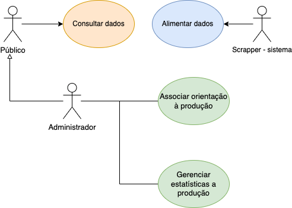
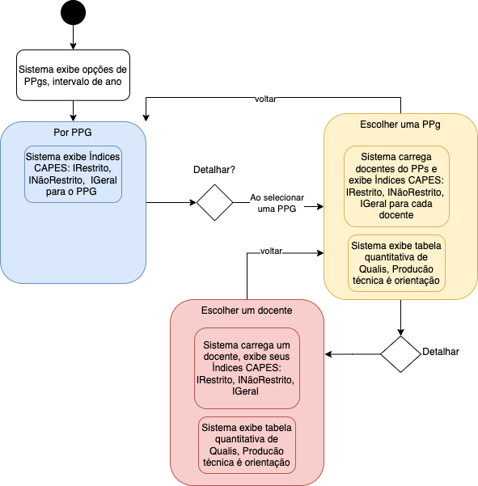
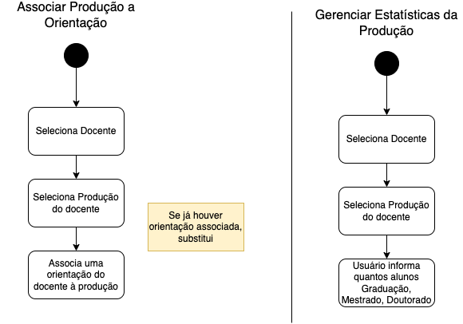
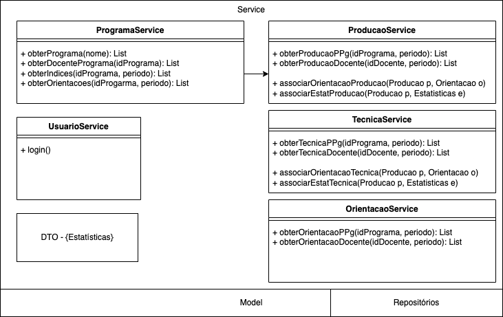

name: inverse class: center, middle, main-title # Projeto Referência para a disciplina Laboratório de Programação --- # Ideia > Usar a explanação para construção de um projeto durante os labs --- # Proposta - Avaliação dos Programas de Pós - Prover índices de continuidade para os programas - Antecipar necessidades - Fatores: produção, orientação, qualis --- # Funcionalidades esperadas: - Cadastrais: - Associar orientação a produção - Preencher estatísticas associadas a orientação --- # Funcionalidades esperadas: - Visualização - Índices CAPES: IRestrito, INãoRestrito, IGeral - Produção por Qualis / H5 / Percentile - Produção por Docente, Programa - Produção com Discentes --- # Escolhas Arquiteturais - Camadas: - divisão de funcionalidades e responsabilidades - manutenção de código - facilidade de mudanças - Orientada a serviços - `backend` gera serviços - consumidos pelo `frontend` --- # Visão de Casos de uso <center>  </center> --- ## Atividades - Consultar Dados <center>  </center> --- ## Atividades - Gerenciar Dados <center>  </center> --- # Modelo de dados <center> <img src="modelo_2023.png" width="650"> </center> --- # Modelo de Dados - <a href="https://dbdiagram.io/d/643326948615191cfa8c86b3">Link no dbdiagram.io</a> - <a href="http://nca.ufma.br/~geraldo/labprog/aulas/_doc_projeto/ppgs_ddl.sql">Link DDL</a> --- # Funcionalidades <center>  </center> --- ## Funcionalidades - Controladores esperados - Obter programas - Para todos os programas - Obter indices capes por programa e período de tempo - Para um programa - Obter indices capes - Obter os docentes - Obter tabela produção capes (quantitativos) - Obter tabela técnicas (quantitativos) - Obter orientações (quantitativos) --- ## Funcionalidades - Controladores esperados - Para um Docente - Obter indices capes - Obter tabela produção capes (quantitativos) - Obter tabela técnicas (quantitativos) - Obter orientações (quantitativos) - Detalhar Produções (listagem + estatísticas + produção com discente) - Detalhar Técnicas (listagem + estatísticas + produção com discente) - Detalhar Orientações (listar produções e ténicas vinculadas) --- # Protótipos TODO